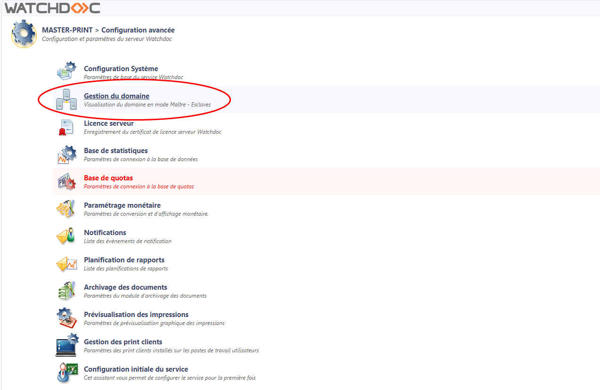
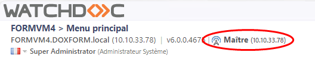
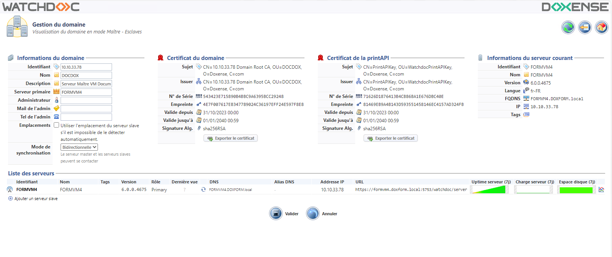
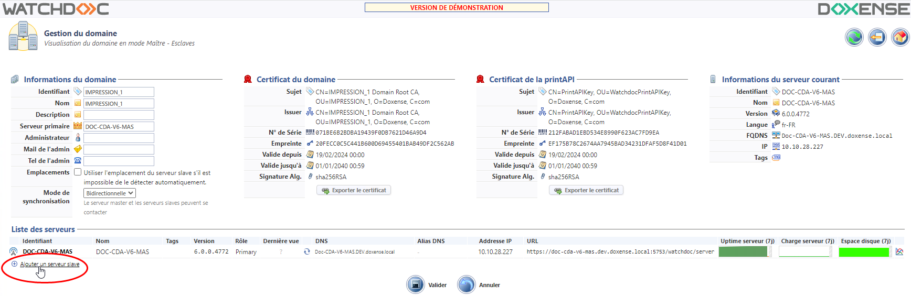
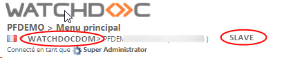
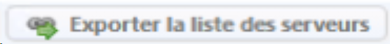
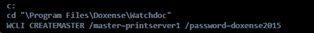
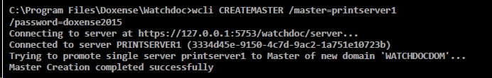
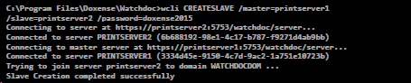

Etapes
Pour mettre en œuvre un domaine comprenant un serveur master et d'autres serveurs :
-
installez Watchdoc sur le serveur master
-
déclarez le serveur en tant que master pour entraîner la création du domaine
-
enregistrez les autres serveurs du domaine
-
configurez les serveurs iis du domaine.
Vous pouvez compléter cette installation en activant la configuration centralisée :
-
activez la configuration centralisée
-
activez le mode de synchronisation.
Accéder à l'interface de gestion du domaine
Depuis le serveur auquel vous souhaitez attribuer le rôle de master,
-
accédez à l'interface d'administration de Watchdoc en tant qu'adminitrateur ;
-
depuis le Menu principal, cliquez sur Configuration avancée ;
-
dans l'interface Configuration avancée, cliquez sur Gestion du domaine :

{kind=link}
Déclarer le serveur master
Un serveur master peut être déclaré depuis l'interface d'administration de Watchdoc (Gestion du domaine).
De fait, déclarer un serveur comme master revient à déclarer conjointement le domaine dont il est le master.
Si le nombre de serveurs master et de domaines à créer est important, il est également possible de les déclarer à l'aide de l'outil en ligne de commande WCLI (Watchdoc Command in Line).
L'outil WCLI peut être lancé depuis le serveur à déclarer, mais peut aussi être lancé de n'importe quel autre serveur Watchdoc, pour peu qu'il existe une connectivité réseau entre le service Watchdoc cible et l'outil de commande.
Déclarer le master depuis Watchdoc
-
Depuis l'interface Gestion du domaine, cliquez sur Créer un domaine en tant que master;
-
dans l'interface Créer un domaine, saisissez :
-
Identifiant : l'adresse IP du serveur master ;
-
Nom : le nom du serveur qui servira à l'identifier dans Watchdoc ;
-
Description : un complément d'information permettant d'identifier le serveur si nécessaire :
-
-
Cliquez sur Créer pour valider la création du domaine et de son serveur master.
{kind=link}
Vérifier le statut du serveur master
-
Dans le Menu principal de Watchdoc, le nouveau statut du serveur s'affiche :

-
dans l'interface de Gestion du domaine, les informations et les certificats du domaine s'affichent :

{kind=link}
{kind=link}
è Vous pouvez compléter les informations du serveur master, mais aussi ajouter d'autres serveurs dans le domaine.
NB. : pour supprimer le rôle master à un serveur , cf. la procédure Déclasser un serveur master.
Déclarer les serveurs slaves Watchdoc
Déclarer les serveurs slaves depuis Watchdoc
Une fois le master déclaré et le domaine créé, vous pouvez ajouter les serveurs slaves du domaine :
-
dans l'interface Gestion du domaine, section Liste des serveurs, cliquez sur Ajouter un serveur slave ;
-
dans l'interface d'ajout, indiquez l'adresse et le port du serveur à ajouter (port du service DSP) ;
-
cliquez sur Ajouter pour valider l'ajout du serveur slave :

{kind=link}
Si la liste des serveurs slaves est importante, elle est paginée. Une page comporte au maximum 30 serveurs.
N.B. : cette configuration peut aussi être effectuée depuis l'interface d'administration du serveur slave.
Vérifier l'ajout des autres serveurs dans le domaine
-
Dans le Menu principal de Watchdoc, le nouveau statut du serveur s'affiche :

-
dans l'interface de Gestion du domaine, les autres serveurs s'ajoutent dans la liste des serveurs, sous le serveur master.
{kind=link}
Configurer l'accès au serveur web du serveur master
Une fois le domaine constitué, il est nécessaire d'indiquer quels sont les serveurs web slaves qui peuvent accéder au serveur web IIS du master. Cette opération repose sur l'outil WebSiteConfig.exe :
-
depuis l'interface d'administration du domaine dans la liste des serveurs, cliquez sur le bouton Exporter la liste des serveurs

-
l'export génère un fichier "servers.xml" dans lequel sont listés tous les serveurs du domaine ;
-
conservez ce fichier à disposition et rendez-vous en tant qu'administrateur sur le serveur master ;
-
sur le master, exécutez l'outil WebSiteConfig.exe (enregistré par défaut dans le dossier C:\Program Files\Doxense\Watchdoc\Tools) ;
-
ouvrez en parallèle le fichier "servers.xml" ;
-
dans l'outil WebSiteConfigurator, cliquez sur Add new ;
-
dans l'interface Server Connection Properties, reportez l'identifiant et l'URI d'un serveur slave du domaine du fichier "servers.xml" ;
-
cliquez sur OK pour autoriser le serveur slave à accéder au serveur web IIS du master ;
-
réitérez l'opération pour tous les serveurs slaves du domaine inscrits dans le fichier "servers.xlm" :
{kind=link}
Gérer le domaine avec WCLI
Vous pouvez également gérer un domaine Watchdoc à l'aide de l'outil WCLI (cf. présentation de l'outil Watchdoc Commandes en Ligne).
Déclarer le master depuis WCLI
-
A l'aide de l'outil de commande, placez-vous dans le répertoire d'installation de Watchdoc :
cd "\Program Files\Doxense\Watchdoc"; -
lancez ensuite la commande de création du Master (en respectant la casse) :
WCLI CREATEMASTER /master=adresse /password=mot_de_passe_de_maintenance
Dans cette commande, la valeur adresse peut être représentée sous les formes suivantes :
-
une adresse IP (ex: 10.10.0.110)
-
un hostname (ex: printserver1)
-
un FQDN (ex: printserver1.doxense.local)
-
une URI (ex: https://printserver1:5753/watchdoc/server)
-
-
vérifiez que vous recevez le message de confirmation suivant :

Déclarer les serveurs slaves à l'aide de WCLI
-
Avec l'outil en ligne de commande, placez-vous dans le dossier d'installation de Watchdoc;
-
lancez la commande d'enregistrement du serveur dans le domaine (en respectant la casse) :
WCLI CREATESLAVE /master=server_master /slave=server_watchdoc /password=mot_de_passe_de_maintenance -
vérifiez que vous recevez le message de confirmation suivant :
